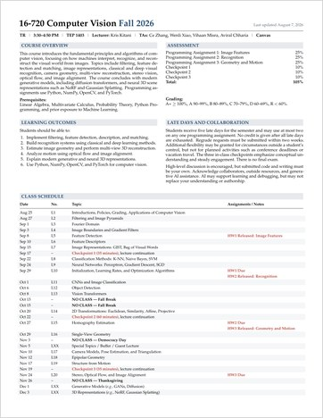
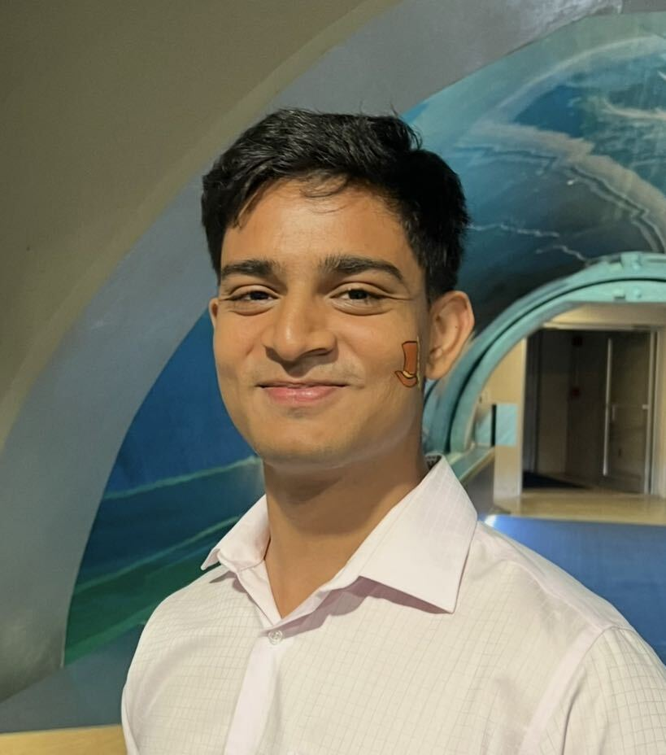

16-720 Computer Vision
Carnegie Mellon University · Fall 2026

Time / Location: Tue / Thu, 3:30–4:50 PM · TEP 1403
Kris KitaniInstructor
Ce ZhangTA
Wenli XiaoTA

Vihaan MisraTA
Aviral ChhariaTA
Manan ShahTA
This course covers core ideas in computer vision, including image formation, filtering, recognition, geometry, 3D vision, and modern vision and generative models, with an emphasis on fundamental principles and influential recent work.
Assignments are published on this website. Enrolled students should use Canvas for announcements, due dates, and class resources.
Schedule
| Date | No. | Topic | Assignments / Notes |
|---|---|---|---|
| Aug 25 | L1 | Introductions, Policies, Grading, Applications of Computer Vision | |
| Aug 27 | L2 | Filtering and Image Pyramids | |
| Sep 1 | L3 | Fourier Domain | |
| Sep 3 | L4 | Image Boundaries and Gradient Filters | |
| Sep 8 | L5 | Feature Detection | HW1 Released: Image Features |
| Sep 10 | L6 | Feature Descriptors | |
| Sep 15 | L7 | Image Representations: GIST, Bag of Visual Words | |
| Sep 17 | – | Checkpoint 1, lecture continuation | |
| Sep 22 | L8 | Classification Methods: K-NN, Naive Bayes, SVM | |
| Sep 24 | L9 | Neural Networks: Perceptron, Gradient Descent, SGD | |
| Sep 29 | L10 | Initialization, Learning Rates, and Optimization Algorithms | HW1 Due HW2 Released: Recognition |
| Oct 1 | L11 | CNN Classification and Detection | |
| Oct 6 | L12 | Vision Transformer | |
| Oct 8 | L13 | DETR, GAN, VAE | |
| Oct 13 | – | NO CLASS — Fall Break | |
| Oct 15 | – | NO CLASS — Fall Break | |
| Oct 20 | L14 | 2D Transformations: Euclidean, Similarity, Affine, Projective | |
| Oct 22 | – | Checkpoint 2, lecture continuation | |
| Oct 27 | L15 | Homography Estimation | HW2 Due HW3 Released: Geometry and Motion |
| Oct 29 | L16 | Single-View Geometry | |
| Nov 3 | – | NO CLASS — Democracy Day | |
| Nov 5 | LX | Special Topic | |
| Nov 10 | L17 | Camera Models, Pose Estimation, and Triangulation | |
| Nov 12 | L18 | Epipolar Geometry | |
| Nov 17 | L19 | Structure from Motion | |
| Nov 19 | – | Checkpoint 3, lecture continuation | |
| Nov 24 | L20 | Stereo, Optical Flow | HW3 Due |
| Nov 26 | – | NO CLASS — Thanksgiving | |
| Dec 1 | L21 | Optical Flow, Image Alignment | |
| Dec 3 | LX | Special Topic |